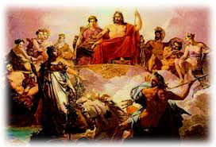
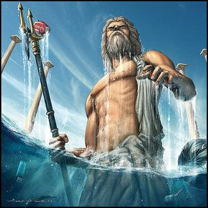
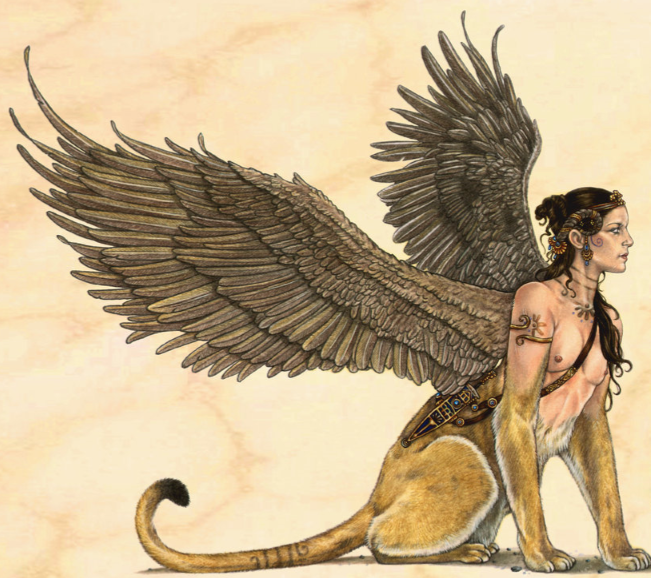
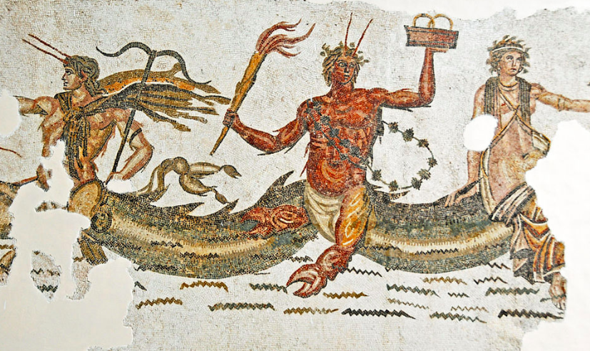
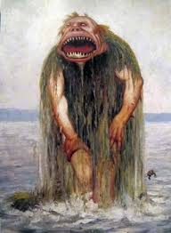

.jpg)
Greek Mythology:    
Folklore Mythology: 
Roman Mythology~contained a number of gods and goddesses, and because of the early influence of Greece on the Italian peninsula and the ever-present contact with
Greek culture, the Romans adopted not only their stories but also many of their gods, renaming a number of them. The stories are often concerned with politics and morality, and
how an individual's personal integrity relates to his or her responsibility to the community or Roman state. Heroism is an important theme.
Greek Mythology~as in other ancient cultures, was used as a means to explain the environment in which humankind lived, the natural phenomena they witnessed
and the passing of time through the days, months, and seasons. A myth is something that has been build upon for hundreds of years and represents the start of life. This is only
believed through a certain religion.
Roman Mythology~this is a collection of fairytale based on people and animals. Superstitions and unfound beliefs are important to folklore. Folklores have collections of
mythical creatures that base on how things looked in the past. Mermaids(half fish half human),Hell hound(demon in the from of a dog),and Orthrus(a two headed dog) are all
examples of mythical creatures. One of the most popular folklore stories is the story of "Acheri".Acheri is a story of a ghost of a little girl who was abused and murdered comes
from the mountains and hilltops and brings sickness to humans,especially kids.
Paris and Helen Audio Story
Troy Audio Story